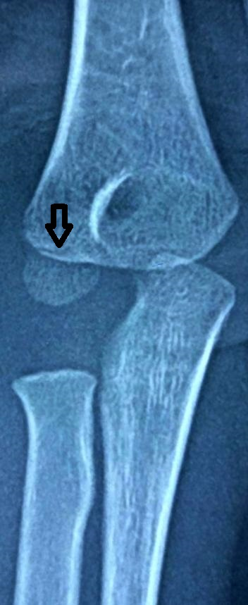
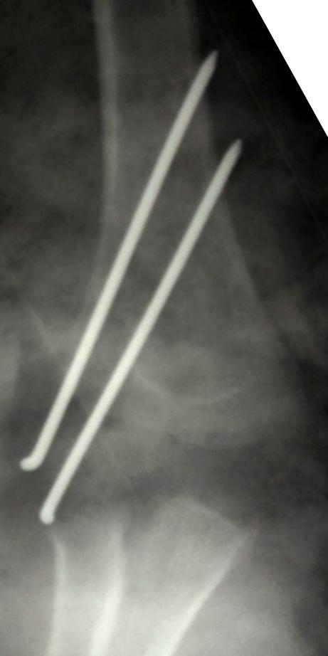
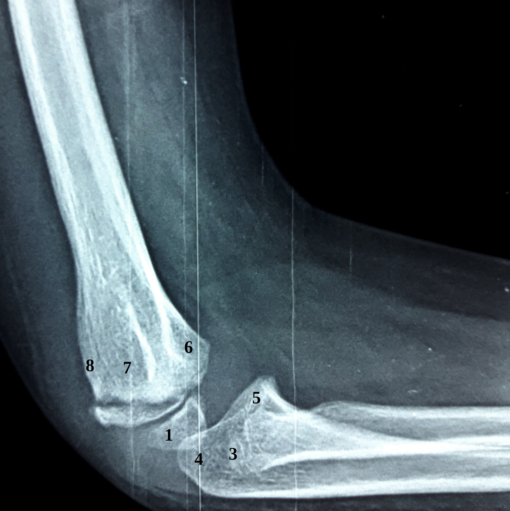
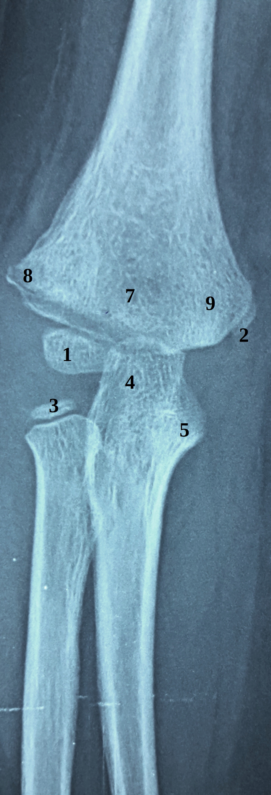
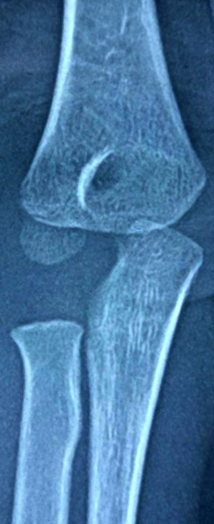
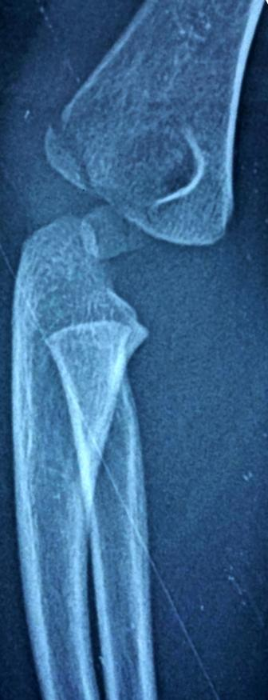
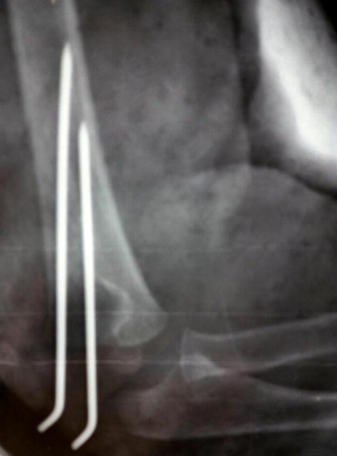

Coude
Cas Clinique 8
Traumatisme négligé du coude droit chez un enfant de 3 ans, suite à une chute de sa hauteur avec réception direct sur le coude.
L’examen a trouvé
un coude tuméfié avec ecchymose en regard,
une douleur à la palpation,
un déficit de la flexion active et passive et
pas de trouble vasculo-nerveux.
La radiographie a montré: (fig1, fig2)
Réponse 1
1: condyle externe
2: condyle interne
3: tête radiale
4: olécrane
5: apophyse coronoïde
6: fossette coronoïde
7: fossette olécranienne
8: épicondyle latéral
9: épicondyle médial
Réponse 1
Fracture du condyle externe droit stade I


Réponse 2
Stade II: déplacement supérieur ou égal à 2mm sur au moins une incidence radiographique, avec une translation latérale et sans rotation
Stade III: déplacement important associant translation latérale et rotation du fragment condylien
Réponse 3
Réduction à ciel ouvert avec maintient par 2 broches obliques (fig5, fig6). Un plâtre brachio-antébrachio-palmaire sera gardé pendant 4 semaines.






Commentaire 1
Commentaire 1
Les fractures du condyle latéral représentent 20% des fractures du coudes de l’enfant. Leur pic de fréquence se situe à l’âge de 6 ans.
Deux mécanismes sont retrouvés:
• Le valgus forcé avec translation du coude en dehors emportant le condyle externe, réalisant une fracture-séparation. Le fragment condylien peut être très déplacé, voire même retourné, les surfaces osseuses cruentées ne sont plus en regard.
• Le déplacement en varus est plus rare, simple bâillement avec fracture-séparation incomplète métaphysaire externe de l’humérus, sans solution de continuité au niveau articulaire. Ce mécanisme plus rare, ne doit pas pour autant rassurer car le trait se prolonge jusqu’au cartilage de croissance.
La recherche de lésions associées est obligatoire.
Commentaire 3
Références
Sharma J., Arora A., Naven C. Lateral condylar fractures of the humerus in children
The Journal of Trauma Vol. 39, No. 6Vasilios A. Papavasiliou and Theodoros A. Beslikas Fractures of the lateral humeral condyle in children an analysis of 39 cases in
Injury (1985) 16,364-366 Printed Great BritainKwang S., Yong W., Chang W., Choer B. and Chul H. Condyle Fractures of the Humerus in Children
Orthop Trauma _ Volume 24, Number 7, July 2010Zerhouni H., Amrani A., Ettayebi F.. Les fractures du condyle huméral externe chez l’enfant
Rev Maroc Chirur Ortho Traumat,2000, 11, 92-9.